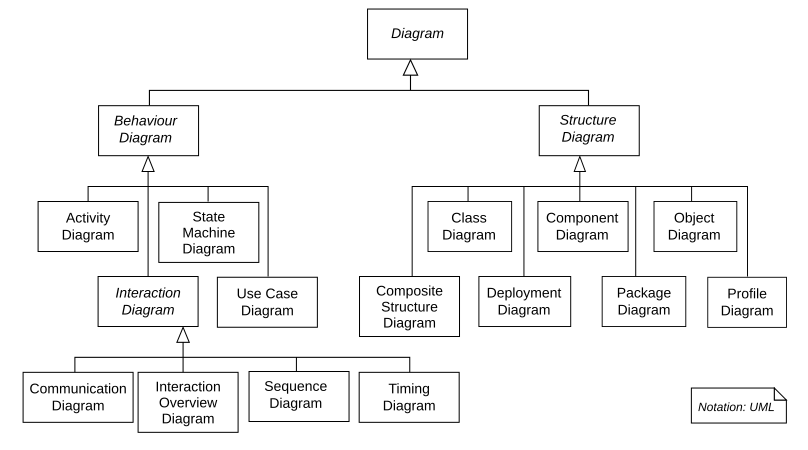

UNIFIED MODELING LANGUAGE (UML)
Ngôn ngữ mô hình hóa thống nhất cho thiết kế hướng đối tượng
Thiết kế Sơ đồ UML & Cơ sở dữ liệu
Ngôn ngữ mô hình hóa thống nhất cho thiết kế hướng đối tượng
UML (Unified Modeling Language) là ngôn ngữ đồ họa tiêu chuẩn để mô tả, trực quan hóa, xây dựng và tài liệu hóa các hệ thống hướng đối tượng. [Wikipedia]

Tổng quan các loại biểu đồ UML
Nguồn: Wikimedia Commons
| Giai đoạn | Sự kiện | Ý nghĩa |
|---|---|---|
| 1970s-1980s | Kỷ nguyên tiền-UML: các phương pháp rời rạc (Booch, OMT, OOSE) | Mỗi nhóm dùng notation riêng → khó giao tiếp |
| 1994-1995 | "Three Amigos" — Grady Booch, James Rumbaugh, Ivar Jacobson hợp nhất phương pháp | UML 0.9, 0.91 drafts ra đời |
| 1997 | UML 1.0 được OMG (Object Management Group) chấp nhận làm chuẩn | Trở thành tiêu chuẩn công nghiệp |
| 1997-2003 | UML 1.x — cải tiến dần | Thêm nhiều loại diagram |
| 2005+ | UML 2.x — major revision | Thêm Composite Structure, Interaction Overview |
| 2017 | UML 2.5.1 — phiên bản mới nhất | Chuẩn ISO/IEC 19505 |
UML vẫn là chuẩn cho tài liệu thiết kế, nhưng nhiều team hiện nay dùng lightweight diagrams (Mermaid, PlantUML) thay vì formal UML tools — dễ maintain, version control được.
UML cung cấp 3 cơ chế để mở rộng ngôn ngữ cho phù hợp với domain cụ thể:
Mở rộng thuộc tính, thêm thông tin mới. Đặt trong ngoặc nhọn: {tag = value}. VD: {version = "2.0"}, {author = "Hung"}
Điều kiện phải đúng — thêm quy tắc mới hoặc sửa đổi quy tắc hiện có. VD: {ordered}, {readonly}, {balance >= 0}
Định nghĩa building block mới từ UML element hiện có, tùy chỉnh theo domain. Đặt trong guillemets: «entity», «service», «controller»
VD trong Spring Boot: «entity» User, «repository» UserRepository, «service» UserService, «controller» UserController
| Biểu đồ | Mục đích |
|---|---|
| Class | Lớp, thuộc tính, phương thức, quan hệ |
| Object | Thể hiện đối tượng tại runtime |
| Component | Thành phần phần mềm & dependencies |
| Deployment | Triển khai vật lý (hardware, software) |
| Package | Tổ chức & dependencies giữa packages |
| Biểu đồ | Mục đích |
|---|---|
| Use Case | Tương tác actor ↔ hệ thống |
| Sequence | Luồng message theo thời gian |
| Activity | Workflow, luồng điều khiển |
| State Machine | Trạng thái & chuyển đổi đối tượng |
| Communication | Tương tác đối tượng trong kịch bản |
Trong BTL: tập trung vào Use Case, Activity, Sequence, Class và ERD.
Class — Object — Component — Deployment — Package
Biểu đồ cấu trúc thể hiện bản thiết kế hệ thống — các lớp, thuộc tính, phương thức và mối quan hệ.
Ảnh chụp hệ thống tại thời điểm cụ thể — hiển thị instances và trạng thái thực tế.
Ví dụ Class Diagram — BankAccount
Nguồn: Wikimedia Commons
Trực quan hóa cấu trúc cấp cao của các thành phần phần mềm:
«component» AuthModule ├── AuthController ├── AuthService ├── JwtProvider └── UserRepository
Cấu hình triển khai runtime — hardware, software, middleware:
«device» Client Browser └── Angular SPA «server» App Server (Docker) └── Spring Boot .jar «server» DB Server └── MySQL 8.0
Minh họa tổ chức và dependencies giữa các packages trong hệ thống:
com.example.app ├── controller → Presentation ├── service → Business Logic ├── repository → Data Access ├── model → Domain Entities ├── dto → Data Transfer ├── config → Configuration └── exception → Error Handling
| Ký hiệu | Ý nghĩa |
|---|---|
| Hình chữ nhật có tab | Package |
| Mũi tên nét đứt | Dependency (phụ thuộc) |
| «import» | Import package |
| «access» | Access package |
| «merge» | Merge package |
Trong Java, package structure phản ánh trực tiếp architecture layers. Spring Boot convention: mỗi package = 1 layer trong Layered Architecture.
Use Case — Sequence — Activity — State Machine — DFD
Biểu diễn tương tác giữa actors và hệ thống: [Wikipedia]
| Ký hiệu | Ý nghĩa |
|---|---|
| Hình người (stick figure) | Actor |
| Hình ellipse | Use Case |
| Hình chữ nhật | System boundary |
| «include» | UC bắt buộc gọi UC khác |
| «extend» | UC mở rộng tùy chọn |
┌─────────────────────┐
│ E-Learning System │
│ │
Student─┤ (Đăng nhập) │
│ (Xem khóa học) │─Admin
│ (Làm bài thi) │
│ (Thanh toán) │
Teacher─┤ (Tạo khóa học) │
│ (Chấm điểm) │
└─────────────────────┘
Đăng nhập ──include──▷ Xác thực
Thanh toán ──extend──▷ Áp dụng mã giảm giá
Mô hình hóa cách các đối tượng tương tác theo thời gian trong một kịch bản cụ thể:
User → Angular → AuthController → AuthService → UserRepo → DB │ │ │ │ │ │ │──login──▷│ │ │ │ │ │ │──POST /login▷│ │ │ │ │ │ │──authenticate─▷│ │ │ │ │ │ │──findByEmail▷│ │ │ │ │ │ │──SELECT──▷│ │ │ │ │ │◁──user────│ │ │ │ │◁──User───────│ │ │ │ │ │──generateJWT │ │ │ │ │◁──JWT Token────│ │ │ │ │◁──200 + JWT──│ │ │ │ │◁──store──│ │ │ │ │
Thể hiện luồng điều khiển và các hoạt động trong hệ thống: [Wikipedia]
| Ký hiệu | Ý nghĩa |
|---|---|
| ● (filled circle) | Start node |
| ◉ (bullseye) | End node |
| Rounded rectangle | Activity/Action |
| Diamond ◇ | Decision/Merge |
| Thick bar ═ | Fork/Join (parallel) |
| Swim lanes | Phân chia theo actor/role |
● ↓ [Chọn sản phẩm] ↓ [Thêm vào giỏ hàng] ↓ ◇──Tiếp tục mua?──▷ [Chọn SP] ↓ Không [Nhập thông tin giao hàng] ↓ ═══ Fork ═══ ↓ ↓ [Xử lý [Gửi email thanh toán] xác nhận] ↓ ↓ ═══ Join ═══ ↓ ◇──Thanh toán OK? ↓ Yes ↓ No [Tạo đơn] [Hiển thị lỗi] ↓ ↓ ◉ ◉
Mô hình hóa các trạng thái đối tượng trải qua và chuyển đổi giữa chúng:
● → [Pending] ──pay──▷ [Processing]
↓ ship
[Shipped]
↓ deliver
[Delivered] → ◉
[Pending] ──cancel──▷ [Cancelled] → ◉
Hiển thị cách đối tượng tương tác trong kịch bản cụ thể — tương tự Sequence nhưng tập trung vào quan hệ thay vì thời gian.
| Sequence | Communication |
|---|---|
| Tập trung thời gian | Tập trung quan hệ |
| Luồng phức tạp | Tổng quan interaction |
Biểu diễn đồ họa cấp cao về luồng dữ liệu trong hệ thống: [Wikipedia]
| Ký hiệu | Ý nghĩa |
|---|---|
| Hình tròn / bo tròn | Process (xử lý) |
| Mũi tên | Data flow (luồng dữ liệu) |
| 2 đường song song | Data store (kho dữ liệu) |
| Hình chữ nhật | External entity |
DFD không thuộc UML nhưng vẫn rất hữu ích cho phân tích hệ thống. Trong BTL, kết hợp DFD Level 0 với Use Case Diagram để có cái nhìn toàn diện.
Thiết kế mô hình dữ liệu — Entities, Attributes, Relationships
ERD là biểu diễn trực quan về dữ liệu và mối quan hệ trong cơ sở dữ liệu. [Wikipedia]
| Thành phần | Ký hiệu | Mô tả |
|---|---|---|
| Entity | Hình chữ nhật | Đối tượng có dữ liệu (User, Course) |
| Attribute | Hình ellipse | Thuộc tính (name, email, price) |
| Relationship | Hình thoi | Quan hệ giữa entities |
| Primary Key | Gạch chân | Định danh duy nhất |

Ví dụ ERD — MMORPG Database
Nguồn: Wikimedia Commons
Đối tượng, khái niệm trong hệ thống có dữ liệu được lưu trữ.
| Loại | Mô tả | VD |
|---|---|---|
| Simple | Không thể chia nhỏ | age, price |
| Composite | Có thể chia thành sub-attributes | address → street, city, zip |
| Derived | Tính từ attribute khác | age (từ birthdate) |
| Multi-valued | Nhiều giá trị | phone numbers |
| Key | Định danh duy nhất (PK) | user_id, course_id |
| Loại | Mô tả | VD |
|---|---|---|
| 1:1 | Một thực thể liên kết với đúng 1 thực thể khác | User ↔ Profile |
| 1:N | Một thực thể liên kết với nhiều thực thể khác | Customer → Orders |
| M:N | Nhiều ↔ Nhiều (cần bảng trung gian) | Students ↔ Courses |
Chỉ rõ số lượng instances của entity có thể/phải liên kết:
1 — chính xác 10..1 — 0 hoặc 1 (tùy chọn)1..* — 1 hoặc nhiều (bắt buộc)0..* hoặc * — 0 hoặc nhiềuNormalization — Constraints — Indexing — Security
Chuyển ERD thành mô hình logic — định nghĩa cấu trúc database dưới dạng tables, columns, foreign keys.
Entity → Table, Attribute → Column, Relationship → Foreign Key
Áp dụng 1NF → 2NF → 3NF → BCNF để giảm dư thừa
PK, FK, Unique, Not Null, Check constraints
1:1 → FK + Unique, 1:N → FK, M:N → Junction table
| student_id | name | phones |
|---|---|---|
| 1 | Hưng | 0901234567, 0912345678 |
❌ Cột phones chứa nhiều giá trị → tách thành bảng riêng
| student_id | course_id | student_name | grade |
|---|---|---|---|
| 1 | CS101 | Hưng | A |
❌ student_name chỉ phụ thuộc student_id, không phụ thuộc toàn bộ PK (student_id + course_id)
✅ Tách: Students(id, name) + Enrollments(student_id, course_id, grade)
| emp_id | dept_id | dept_name |
|---|---|---|
| 1 | D01 | IT |
❌ dept_name phụ thuộc dept_id (không phải PK emp_id)
✅ Tách: Employees(emp_id, dept_id) + Departments(dept_id, dept_name)
| NF | Loại bỏ |
|---|---|
| 1NF | Repeating groups, non-atomic values |
| 2NF | Partial dependency |
| 3NF | Transitive dependency |
| BCNF | Overlapping candidate keys |
| Constraint | Mô tả |
|---|---|
| PRIMARY KEY | Định danh duy nhất mỗi hàng |
| FOREIGN KEY | Tính toàn vẹn tham chiếu giữa bảng |
| UNIQUE | Giá trị duy nhất trong cột |
| NOT NULL | Không cho phép NULL |
| CHECK | Kiểm tra điều kiện (VD: price >= 0) |
| DEFAULT | Giá trị mặc định |
| Quan hệ | Cách implement |
|---|---|
| 1:1 | FK + UNIQUE constraint |
| 1:N | FK ở bảng "nhiều" |
| M:N | Junction table (bảng trung gian) |
@ManyToMany @JoinTable( name = "student_course", joinColumns = @JoinColumn(name = "student_id"), inverseJoinColumns = @JoinColumn(name = "course_id") ) private Set<Course> courses;
Chuyển logical design thành physical schema cho DBMS cụ thể (MySQL, PostgreSQL).
CREATE TABLE users (
id BIGINT AUTO_INCREMENT PRIMARY KEY,
email VARCHAR(100) NOT NULL UNIQUE,
password VARCHAR(255) NOT NULL,
full_name VARCHAR(100) NOT NULL,
role ENUM('STUDENT','TEACHER','ADMIN')
DEFAULT 'STUDENT',
created_at DATETIME DEFAULT NOW(),
INDEX idx_email (email),
INDEX idx_role (role)
) ENGINE=InnoDB CHARSET=utf8mb4;
Index là đối tượng database tăng tốc truy vấn bằng cách tạo cấu trúc tra cứu nhanh.
| Nên Index | Không nên |
|---|---|
| Cột WHERE thường xuyên | Bảng nhỏ (<1000 rows) |
| Cột JOIN | Cột ít distinct values |
| Cột ORDER BY | Cột hay UPDATE |
| Foreign Keys | Cột TEXT/BLOB lớn |
-- Single column index CREATE INDEX idx_email ON users(email); -- Composite index CREATE INDEX idx_course_date ON enrollments(course_id, enrolled_at); -- Unique index CREATE UNIQUE INDEX idx_unique_email ON users(email);
| Chiến lược | Mô tả |
|---|---|
| Full Backup | Toàn bộ DB — chậm nhưng đầy đủ |
| Incremental | Chỉ thay đổi từ lần backup cuối |
| Differential | Thay đổi từ lần full backup cuối |
| Point-in-time | Khôi phục đến thời điểm cụ thể |
Cloud databases (AWS RDS, Azure SQL) cung cấp automated backup + point-in-time recovery. Trong BTL, cấu hình MySQL backup trong Docker Compose.
| Ký hiệu | Mức truy cập |
|---|---|
+ | public |
- | private |
# | protected |
~ | package (default) |
┌─────────────────────────┐ │ User │ ← Class name ├─────────────────────────┤ │ - id: Long │ ← Attributes │ - email: String │ │ - password: String │ │ # createdAt: DateTime │ ├─────────────────────────┤ │ + login(): boolean │ ← Methods │ + logout(): void │ │ - validatePass(): bool │ │ + getEmail(): String │ └─────────────────────────┘
| Quan hệ | Ký hiệu | Ý nghĩa |
|---|---|---|
| Association | ────── | Liên kết thông thường |
| Dependency | - - - -> | Phụ thuộc tạm thời |
| Inheritance | ───▷ | Kế thừa (extends) |
| Realization | - - -▷ | Implements interface |
| Aggregation | ◇────── | Có một (whole-part) |
| Composition | ♦────── | Là một phần của (strong) |
1 — đúng 10..1 — 0 hoặc 11..* — 1 hoặc nhiều* — 0 hoặc nhiều1..5 — từ 1 đến 5UC con luôn được gọi khi UC cha chạy. Tách logic dùng chung.
"Đặt hàng" --include--> "Xác thực user" "Mua hàng" --include--> "Xác thực user" // Cả 2 UC đều cần xác thực // → Tách thành UC riêng dùng chung
UC mở rộng chỉ chạy trong điều kiện nhất định.
"Áp dụng coupon" --extend--> "Đặt hàng" // Coupon chỉ chạy khi user có mã // Không bắt buộc
Actor hoặc UC kế thừa từ actor/UC khác.
User
/ \
Student Teacher
\
Admin
// Admin kế thừa Teacher
// Teacher kế thừa User
// Có thể làm tất cả những gì User có
┌──────────────────────────────┐ │ Hệ thống Bán hàng │ │ │ │ ○ Đăng nhập ○ Xem sản phẩm │ │ ↑include ↑ │ │ ○ Đặt hàng ─────┘ │ │ ↑extend │ │ ○ Áp dụng coupon │ │ ○ Thanh toán ○ Xuất hóa đơn │ └──────────────────────────────┘ ↑ ↑ Customer Admin
Swim Lanes phân chia activities theo actor/role — dễ nhìn ai làm gì.
┌──────────┬──────────────┬──────────┐ │ Customer │ System │ Admin │ ├──────────┼──────────────┼──────────┤ │ ● │ │ │ │ ↓ │ │ │ │ Đăt hàng │ │ │ │ ↓ │ │ │ │ │ Validate │ │ │ │ ◇──invalid──→│ │ │ │ ↓ valid │ Notify │ │ │ Lưu DB │ │ │ │ ↓ │ │ │ │ Send email │ │ │ │ ↓ │ │ │ │ │ Approve │ │ │ │ ↓ │ │ Nhận │ │ │ │ thông báo│ │ │ │ ↓ │ │ │ │ ◉ │ │ │ └──────────┴──────────────┴──────────┘
| Ký hiệu | Ý nghĩa |
|---|---|
| ● | Initial node (start) |
| ◉ | Final node (end) |
| ⬭ | Activity (action) |
| ◇ | Decision/Merge |
| ═══ | Fork/Join (parallel) |
| → | Control flow |
| ⊙ | Object node |
| ↪ | Send signal |
Crow's Foot là notation phổ biến nhất cho ERD hiện nay — dễ đọc, trực quan.
| Ký hiệu | Ý nghĩa |
|---|---|
| ──┤ | Exactly one (1) |
| ──◯┤ | Zero or one (0..1) |
| ──┤├ | One and only one |
| ──< | One or many (1..*) |
| ──◯< | Zero or many (0..*) |
Customer ──┤├────<── Order // 1 Customer có nhiều Orders (0+) // 1 Order thuộc về đúng 1 Customer
┌──────────┐ ┌──────────┐
│ Customer │──┤├─<──│ Order │
├──────────┤ ├──────────┤
│ id (PK) │ │ id (PK) │
│ name │ │ date │
│ email │ │ total │
│ phone │ │ cust_id │
└──────────┘ │ (FK) │
└──────────┘
│
│┤├
│
▼<
┌──────────┐
│OrderItem │
├──────────┤
│ id (PK) │
│ order_id │
│ prod_id │
│ qty │
│ price │
└──────────┘
│
│>┤├
▼
┌──────────┐
│ Product │
├──────────┤
│ id (PK) │
│ name │
│ price │
└──────────┘
PlantUML cho phép viết UML bằng text DSL — version control trên Git, auto generate diagrams. [plantuml.com]
@startuml
class User {
-id: Long
-email: String
-password: String
+login(): boolean
+logout(): void
}
class Order {
-id: Long
-date: DateTime
-total: BigDecimal
+calculateTotal(): BigDecimal
}
User "1" --> "*" Order : places
@enduml
@startuml actor User participant Browser participant Controller participant Service database DB User -> Browser: Click Login Browser -> Controller: POST /login Controller -> Service: authenticate() Service -> DB: SELECT user DB --> Service: user data Service -> Service: verifyPassword() Service --> Controller: JWT token Controller --> Browser: 200 + token Browser --> User: Show dashboard @enduml
Mermaid là alternative của PlantUML — render trực tiếp trong Markdown, GitHub, GitLab. [mermaid.js.org]
```mermaid
flowchart TD
A[Start] --> B{User logged in?}
B -->|Yes| C[Show Dashboard]
B -->|No| D[Show Login Page]
D --> E[Enter credentials]
E --> F{Valid?}
F -->|Yes| C
F -->|No| D
```
```mermaid sequenceDiagram User->>Frontend: Click Login Frontend->>API: POST /login API->>DB: Query user DB-->>API: User data API-->>Frontend: JWT token Frontend-->>User: Dashboard ```
```mermaid
erDiagram
CUSTOMER ||--o{ ORDER : places
ORDER ||--|{ ORDER_ITEM : contains
PRODUCT ||--o{ ORDER_ITEM : "ordered in"
CUSTOMER {
int id PK
string name
string email
}
ORDER {
int id PK
int customer_id FK
date order_date
}
```
```mermaid
classDiagram
User <|-- Student
User <|-- Teacher
class User {
-Long id
-String email
+login() boolean
}
class Student {
-String studentCode
+enroll() void
}
```
| Loại | Mô tả |
|---|---|
| B-tree | Mặc định MySQL/PostgreSQL, balanced tree |
| Hash | Equality lookup nhanh, không range query |
| Bitmap | Cột ít distinct values |
| Full-text | Search trong text |
| Spatial | Geographic data |
| Composite | Nhiều cột |
| Unique | Đảm bảo unique constraint |
| Partial | Index 1 phần data |
-- Single column CREATE INDEX idx_email ON users(email); -- Composite (order matters!) CREATE INDEX idx_status_date ON orders(status, created_at); -- Unique CREATE UNIQUE INDEX idx_username ON users(username); -- Full-text CREATE FULLTEXT INDEX idx_description ON products(description); -- Drop DROP INDEX idx_email ON users; -- Show indexes SHOW INDEX FROM users; -- Explain query plan EXPLAIN SELECT * FROM users WHERE email = 'test@cmc.vn';
⚠️ Index làm INSERT/UPDATE chậm hơn — chỉ tạo cho cột thường xuyên search.
| JOIN | Mô tả |
|---|---|
| INNER JOIN | Chỉ rows match cả 2 bảng |
| LEFT JOIN | Tất cả rows bảng trái + match bảng phải |
| RIGHT JOIN | Tất cả rows bảng phải + match bảng trái |
| FULL OUTER | Tất cả rows cả 2 bảng (PostgreSQL) |
| CROSS JOIN | Cartesian product |
| SELF JOIN | Join với chính nó |
SELECT u.name, o.order_date, o.total FROM users u INNER JOIN orders o ON u.id = o.user_id WHERE o.status = 'completed';
SELECT u.name, COUNT(o.id) AS order_count FROM users u LEFT JOIN orders o ON u.id = o.user_id GROUP BY u.id, u.name ORDER BY order_count DESC;
SELECT e.name AS employee, m.name AS manager FROM employees e LEFT JOIN employees m ON e.manager_id = m.id;
SELECT u.name, p.title, oi.qty FROM users u JOIN orders o ON u.id = o.user_id JOIN order_items oi ON o.id = oi.order_id JOIN products p ON oi.product_id = p.id WHERE o.created_at > '2026-01-01';
Liệt kê chức năng chính → vẽ Use Case Diagram tổng quan và phân rã theo actor
Viết UC Spec chi tiết: Actor, Pre/Post-conditions, Main Flow, Alternatives
Cho mỗi quy trình nghiệp vụ chính — swim lanes nếu có nhiều actors
Identify entities, attributes, relationships, cardinality
Áp dụng 1NF → 2NF → 3NF, định nghĩa constraints
Cho mỗi UC quan trọng — thiết kế chi tiết classes và tương tác
Convert sang SQL DDL, thêm indexes, configure DB
Câu hỏi? Thảo luận?
40 ThS. Nguyễn Việt Hưng - Trường Đại học CMC